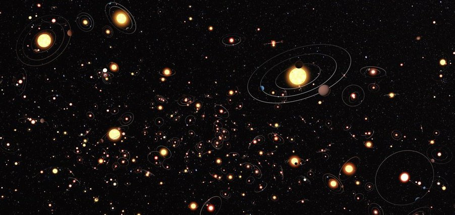
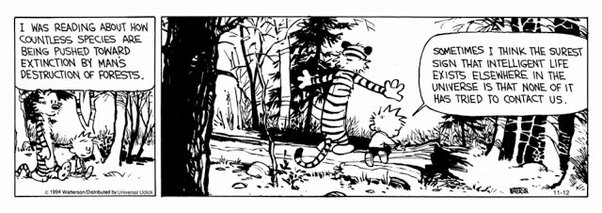

Share My Genius: Do Aliens Actually Exist?
By: Tess Morgan
Do you ever wonder what lies beyond the comfort of our own lives or even our own world? Beyond your home, school, routinely grocery store or gas station. Beyond cities or states, countries or even planets. Think beyond space. Deep into the unknown, where lack of knowledge sparks imagination. How do we know aliens really don't exist?
With a variety of telescopes, scientists know space is over 92 billion light years wide. That either ignites fear, anxiety, or like me: creativity. Since I was a child, space awakened curiosity within me. Wondering if we live in solidarity or concealed company. To an optimist, the idea of other life seems without a doubt; however, humans struggle with the lack of explicit evidence in-favor of extraterrestrial life. But that shouldn't disregard their existence. Ignoring the untamed conspiracies and confabulations. This website is about the scientifical and evidence-based truth that lies beyond comfortability.
What even is life?
There are over 100 definitions of "life", but many are limited to the concept of life on Earth. Nasa qualifies life as a creature who meets the criteria of having the ability to grow and reproduce, respond to stimuli, have a form of evolution, homeostasis, and a way to develop. Defining life requires characters beyond the Earth's biosphere since it views "life" through a single viewpoint.
Requirements for life:
Planets require water, carbon, energy, time, and pure luck; yet, the possibility for the perfect mix to be found is high due to the infinite possible planets. The perfect mixture of all of this is called the habitable zone. Described by head of NASA's Astrobiology Program Mary Voytek it is "the range of orbital distances in which water can exist on a worlds surface".
If we implement the requirement on other planets, scientists discovered one in every five stars similar to our sun contains an Earth-sized planet within the habitable zone. There are more than 4,500 exoplanets confirmed and statistically if we reach into a bucket of space and grab a handful of planets, the likelihood of obtaining conditions identical to us is higher than you would imagine.

Then Why Haven't We Come In Contact Yet?
Comparing the advancements of our civilization to others might be contradictory because of the possibility that they are further beyond us in technological, civil, and evolutionary advancements. Considering the size and age of the universe, being the first life to ever exist puts those chances to slim to none. Frank Drake took it upon himself to concoct and present a formula that estimates the number of advanced detectable societies within the Milky Way galaxy. Drakes Equation states N is equal to an array of 7 following different variables all providing with certainty that extraterrestrial life exists beyond the confounds of our minds, personal lives, and galaxy.
After Drake's presentation, Adam Frank, a professor of physics and astronomy teamed up with astrobiologist Woodruff Sullivan. They calculated the odds against the chance for humanity to be the sole advanced civilization throughout the universe's entire history. It challenged the question of how often does our universe inhabit evolved advanced societies. Their data provided insight to how unique the odds Earth's humanity is. It's about one in 10 billion trillion. "One in 10 billion trillion is incredibly small," says Frank. "To me, this implies that other intelligent, technology producing species very likely have evolved before us". The implications state that what has occurred to get us to standing here today, has in fact happened about 10 billion other times over cosmic history.
The Fermi Paradox:
The Fermi Paradox is the conflict that refers to the lack of concrete evidence and contrasting high probability of extraterrestrial life. The Fermi Paradox asks the question: where are all the aliens then? The first answer could be how physical difficulty as making journeys between planets millions of light years away provide obvious complications. Another reason could be that aliens aren't as fascinated in us as we are in them, it's pure choice to not waste their time on Planet Earth. That leads to the possibility that they have already. In the history of Earth, could we have missed observing their appearance? Were we too busy fighting WW2 to missing the flying saucer above? Finally the last answer to the Fermi Paradox is what if we are the first, what if civilizations out there are have arose too recently, what if we are the aliens flying around and creating unknown chaos on their planet.
What I Will Leave You With:
Before you leave expecting E.T to be knocking on your doorstep tonight, the disappointing truth is that given the vast distances between planets it would be near impossible to hold a conversation them anyways. However, the imagination, curiosity, and creativity that is kindled should be used to propel you into seeking out answers. The next time you are staring up at the stars, understanding that life does reside in the far beyond, maybe something unexpected will happen. Because you can never really know with the unknown.